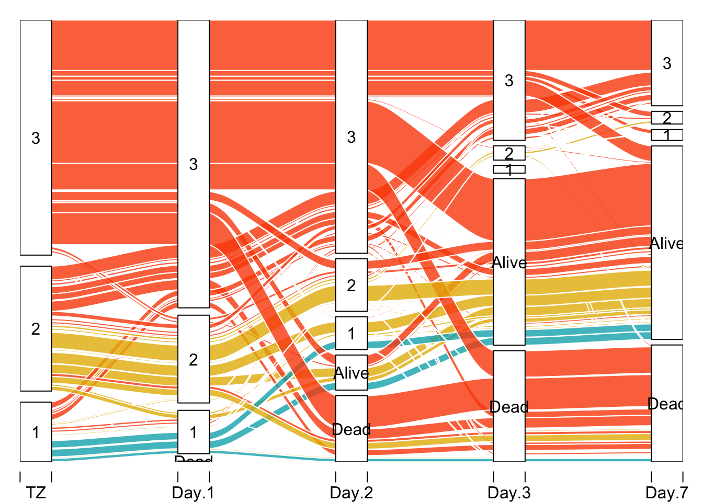

HairEyeColor |> as.data.frame() 인트로
Sankey(생키) diagram라고도 하는 Sankey plot은 범주형 데이터의 분배, 변환 또는 보존을 설명하는 데 활용되는 그래프 중 하나입니다. 그래프에서 노드 간 화살표 또는 링크의 너비는 흐름 양에 비례하므로 여러 흐름의 상대적 크기를 쉽게 비교할 수 있습니다.
쉽게 말해, Sankey plot은 데이터의 변화 양상이나 응답 빈도의 양상 등을 확인할 수 있는 그래프입니다.
R에서 Sankey plot을 시각화할 수 있는 패키지 중 하나는 ggalluvial 입니다. gg가 붙은 것에서 알 수 있듯이, ggplot2 의 확장 패키지 중 하나입니다.
저 같은 경우, 시간의 흐름에 따른 범주의 양상을 Sankey plot으로 시각화한 경험이 있습니다. 예를 들면 첫 번째 건강검진부터 세 번째 건강검진 간 비만인 사람들의 분포를 시각화하는 것이죠.
ggalluvial은 Sankey plot을 그리기 위해 wide 데이터와 long 데이터를 모두 사용할 수 있습니다.
Wide 데이터로 Sankey plot 그리기
wide 데이터는 쉽게 말해 여러 가지 column이 옆으로 붙어있는 데이터를 의미합니다.
Sankey plot을 그리기 위한 wide 데이터에서는 하나의 열에 범주가 와야 하고, 범주의 조합에 해당하는 빈도(Frequency) 열이 와야 합니다.
예를 들어 HairEyeColor 데이터를 살펴보겠습니다.
HairEyeColor 데이터는 성별, 머리 색상, 눈동자 색상에 따른 빈도 데이터를 담고 있습니다. 이 데이터를 활용해 Sankey plot을 작성해보도록 하겠습니다.
library(ggalluvial)
ggplot(as.data.frame(HairEyeColor),
aes(y=Freq, axis1 = Hair, axis2 = Eye, axis3= Sex)) +
geom_alluvium(aes(fill=Eye),
width=1/8, knot.pos = 0, reverse = F) +
geom_stratum(alpha = .25, width=1/8, reverse=F) +
geom_text(stat = "stratum", aes(label = after_stat(stratum)), reverse=F) +
scale_fill_manual(values=c(Brown="brown", Hazel="#E2AC76", Green="darkgreen", Blue="lightblue2")) +
coord_flip() +
theme_minimal()
geom_alluvial()은 Sankey plot에서 노드를 그려주고, geom_stratum()은 각 열의 범주를 나타내는 막대를 그려줍니다.
성별 * 머리 색상 * 눈동자 색상에 따른 범주의 분포를 보여주는 그래프가 완성되었습니다.
Long 데이터로 Sankey plot 그리기
이번에는 긴 데이터를 활용해 Sankey plot을 그려보겠습니다. 긴 데이터는 열들의 조합에 따른 범주를 나타내는 넓은 데이터와 달리, 하나의 행이 보통 하나의 경우를 의미합니다. 긴 데이터는 주로 공통된 ID, 그룹 별 값에 따른 데이터를 보여줍니다.
예를 들어보겠습니다. majors라는 데이터를 보면 student 라고 하는 학생 ID가 1번부터 15번 까지 있습니다. 또한 semester는 1학기부터 15학기까지 있는데, 각 학생들의 학기별 curriculum에 대한 데이터를 보여주고 있습니다.
majors$curriculum <- as.factor(majors$curriculum)
ggplot(majors,
aes(x=semester, stratum = curriculum, alluvium=student, fill=curriculum, label = curriculum)) +
geom_flow(stat = "alluvium", lode.guidance = lode_frontback,
color = "darkgrey") +
geom_stratum() +
scale_fill_brewer(type="qual", palette = "Set2")
위의 그래프를 통해, 학생들이 학기별로 어떤 커리큘럼을 선택했는지 흐름과 빈도를 알 수 있습니다.
물론 긴 데이터에 빈도가 있는 경우도 이를 활용할 수 있습니다. 마찬가지로 ggalluvial 패키지의 vaccinations 데이터를 이용하겠습니다.
vaccinationsvaccinations 데이터는 RAND American Life Panel 설문 조사 중 세 건을 합친 데이터입니다. 인플루엔자 예방을 위해 백신 접종을 할 의향을 묻고 있는 데이터입니다. Never, Sometimes, Always 등의 응답이 기록되어 있습니다.
# 그래프에서 나타나는 범주 순서 변경 위해
vaccinations$response <- factor(vaccinations$response, levels = rev(levels(vaccinations$response)))
ggplot(vaccinations,
aes(x=survey, y=freq,
stratum = response,
alluvium = subject,
fill = response,
label = response)) +
geom_flow() +
geom_stratum(alpha=.5) +
geom_text(stat = "stratum", size=3) +
scale_x_discrete(expand = c(0.1,0.1)) +
theme_void() +
theme(legend.position = "none")위의 그래프에서 freq는 survey와 response별로 합해져 그래프에 나타나는 것을 알 수 있습니다.
참고자료
https://cran.r-project.org/web/packages/ggalluvial/vignettes/ggalluvial.html